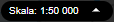
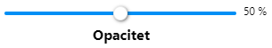
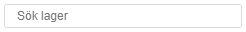
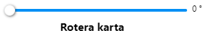
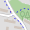
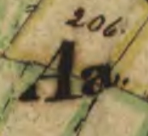
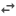

Sök
Sökresultat börjar visas när du skrivit in minst 2 tecken. Välj ett sökresultat och du zoomas till vald plats.
Visa information om objekt i kartan
Klicka på objekt i kartan för att få upp en ruta med information om objektet.
Zooma och navigera

Med skalväljaren som finns i sidfoten väljer du bland förbestämda zoomskalor.Interagera med kartan
- Du kan även zooma genom rullhjulet på musen eller dubbelklicka i kartan.
- Håll ner Shift och dubbelklicka i kartan för att zooma ut.
- Flytta kartan i sidled genom att klicka och dra i kartan.
- Det går även att hålla ner Shift och dra upp en rektangel med att klicka i kartan med musen, så zoomas det in till det området (Box Zoom).
Visa och dölj kartlager

Reglage för att ställa in genomskinligeten på lagret.
Sök funktion för att hitta bland de lager som finns i kartan. Skriv minst 2 tecken för att söka. Klicka på ett lager för att tända det i kartan.Mäta
Rita och skriv i kartan
Interagera med ritverktyget
- Håll ner Shift och dra i kartan för att frihandsrita en linje eller yta.
- Håll ner Alt och klicka på en brytpunkt för att ta bort den.
Skriv ut
Möjlighet att ange rubrik ovanför kartan. Går även att ändra justering och storlek på rubriken.
Möjlighet att ange beskrivning under kartan. Går även att ändra justering och storlek på rubriken.
Det går att ange storlek till A4, A3 eller valfri.
Ändra orientering, liggande eller stående sida.
Det går att ange upplösning till låg, mellan och hög vilket motsvarar 75, 150 och 300 dpi upplösning. Högre upplösning ger större filstorlek.
Välj utskriftsskala för att sätta en skala som ger en skalenlig utskrift.
Knappar för att slå på/av utseende/information: marginaler, skapad tid, skala, norrpil och legend (teckenförklaring).
Dragreglage för att rotera kartan.

Dragreglage för att rotera kartan."Spara bild" knapp för att göra en bild-fil som går att använda till att klistra in i annat program/dokument.
"Skapa pdf" knapp för att skapa en PDF som går att därifrån skriva ut eller skicka till andra.
Dela karta
Kartlänkar till andra kartor
 Google maps i Street View läge öppnas centrerad till samma plats som du har i den här kartan.
Google maps i Street View läge öppnas centrerad till samma plats som du har i den här kartan.
 Mapillary öppnas centrerad till samma plats som du har i den här kartan.
Mapillary öppnas centrerad till samma plats som du har i den här kartan.

OpenStreetMap öppnas centrerad till samma plats som du har i den här kartan.
Historiska kartor Lantmäteriet öppnas med sökning efter kartor utifrån plats som du har i den här kartan.Lägg till tillfälliga lager i kartan
Dra och släpp filer i kartan. Filformat som fungerar är GeoJSON, GPX, IGC, KML och TopoJSON
Koordinatsystem och koordinater
Byt koordinatsystem genom att klicka på det i sidfoten. Du kan välja mellan Sweref99 17.15, Sweref99 TM och WGS84
Inbäddade kartor
För att få full funktionalitet
Filter funktion
Verktyg för att filtrera på attribut i tända lager.
Gör så här:
- Välj bland de tända lagren i dropdown-listan.
- Bestäm om filtreringen ska göras på "något" (OR) eller "alla" (AND) av de följande genom att välja i dropdown-listan.
- Välj vad som ska filtreras på genom att välja i listan för "Attribut".
- Välj på vilket sätt attributet ska filtreras genom att välja i listan för "Operator".
- Och slutligen skriv in ett värde.
- Upprepa om det ska filtreras på flera olika sätt genom att klicka på "Lägg till attribut" och då läggs en till rad att göra val.
- Klicka på knappen "Filtrera" för att verkställa filtreringen.
- Klicka på knappen "Rensa" för att ta bort filter på det lager som är valt i "Tända lager".
- Klicka på knappen "Rensa allt" för att ta bort filter på alla lager.
OBS! Funktionen skiljer på små och stora bokstäver, så det måste stavas exakt som det står för att det ska bli träff.
Jämför kartvyer
Verktyg för att jämföra olika kartvyer. Det går att välja mellan att jämföra sid vid sida eller genom ett kikhål. Lagren som väljs att jämföra emot går att ändra i lagerväljar fönstret, som är flyttbart och går att stänga ner. Den vanliga legenden används för att ändra vilka bakgrunder och lager som ska visas på höger sida (alternativt ovanför kikhålet). Hur mycket av bildytan som ska tas upp av de olika sidorna går att justeras genom att dra i den blå pilknappen i nedre delen av kartan.

Välj jämför sida vid sida funktionen.Markera i kartan
Verktyg för att markera och välja ut objekt i kartnas lager samt att exportera ut urvalet till extern fil. OBS! Det fungerar inte att markera i alla lager, för att se om det stöds för ett specifikt lager klicka på i lagerväljaren och läs texten längst ner.